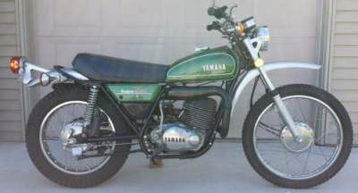
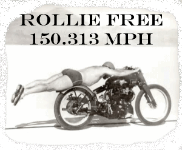
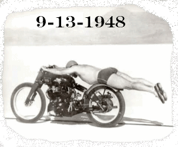

TROUBLE SHOOTING
A NEW (TO YOU ANYWAY) MOTORCYCLE

¶ Well, it's bound to happen sooner or later. You're over at your Uncle's place and there it is. A 1989 Honyamsuzykaw 721 Special. You know, the one with the chrome plated clutch cable, so you can shift gears faster... or so the ad you once read in High School said. Your Uncle says he got it from his son's best friend's cousin's neighbor. Ran just fine when he left it here four years ago. He'll let it go cheap. Thing is... do you want it?
They tell me that outboard motors don't wear out while running, they wear out while sitting. I've found that this is true. It seems it is often true of motorcycles too. Just about the worst thing that can happen to an engine is for it to sit there doing nothing. Rust starts to form everywhere. The rubber seals and o-rings dry out and harden. The sun, and ozone in the air start to rot the plastic parts. The saying is true, "Use it or loose it." So when you look at a bike that has been sitting for any length of time, you are looking at RESTORATION and not repair. How much restoration is needed will depend on how long it's been sitting and how well it was prepared for storage. You can look at the mileage of a bike with a grain of salt. Most bikes are junked out at extremely low mileages. 18-25,000 miles for the big stuff and 5-10,000 for the small bikes. I think this is because (unfortunately) motorcycles are not considered to be real transportation in the USA. They are viewed as recreational vehicles. As a result they sit for long periods of time, run hard for a short time, and then are put away again. I have a friend who was a missionary in Indonesia. He reports that the little Yamaha Bikes they use there (90-100cc) would rack up 60-70,000 miles. Yes, they rebuilt them a lot, but they still lasted a long time. The secret? They were in use all the time.
The first thing we want to do is look at it. It's been sitting a while so it will be dusty dirty, but that's not what we are looking for. We are looking for bent stuff and scrapes. Asphalt makes a distinctive mark on metal that is violently thrown upon it. If all looks OK, kick the engine over. If the engine has no kick starter and the battery is dead, you can use a car battery. Take out the dead battery and hook up jumper cables from the good battery directly to the bike negative and positive leads. Make sure the voltage is correct (6 or 12 volts). Don't connect things to the old, dead battery. There is a chance it could blow up if it gets hit with all that juice from the car battery. If the engine will turn over, take the spark plugs out, put them in the spark plug caps and ground them to the cylinder head. If you have a compression gauge, run a compression test on each cylinder. Remember to hold the throttle open while you turn the engine over with the gauge hooked up. You need AT LEAST 100 psi. 120-135 is pretty good and 150-170 is great. Two strokes will test less because of the ports. If you don't have a gauge handy and if you can reach the spark plug hole, put your thumb over the hole. Push hard and then turn the engine over. If the compression will blow your thumb off the spark plug hole (no matter how hard you push) the compression is probably OK. At least enough to start the engine. While you have the plugs out check for spark.
If the engine is stuck... won't turn over... or has no compression, it's top end rebuild time. If there is no spark and the bike has electronic ignition, things can get real pricey, real quick. Electronic ignition can be very hard to trouble shoot too. Most bikes, after 1980 have electronic ignition (but not all!) Most bikes before 1980 have points (but not all!) If you have no spark and the bike has points, odds are a new set, timed right will get your spark back. Look at the spark plugs. If they are oily, the oil rings may be worn even if the compression is good. Check the oil. Does it look good? If you don't know what good oil looks like, buy a quart of oil and look at it and feel it. That's how the oil should be. The oil in most engines will be darker, but you will have an idea of how things should be. If it smells burnt there may be clutch problems. If it smells like gas, the fuel valves in the carbs may be stuck open or leaking. If it is a funny color, like white or green, it has a lot of contaminates in it. White or whitish, oil has water in it. Green? Well, I'm not sure. I've seen it a number of times. Must be a combination of water, acids, and things the neighbor's kid stuck in. One things for sure... it's not good! If you can, drain the oil and look at what comes out. If there is water is it rusty or clear. If it's rusty, it's not good. Where do you think that rust came from? You might want to steer clear of this one. If it's clear, you might be OK... maybe. This bike better be cheap!
OK, everything checks out. We have compression, spark and we didn't hear any bad noises. The bike looks OK on the outside too. So now we look to make a deal. How much is this thing worth ? Well, let me tell you. If a bike is not running it's not worth much! Even with compression and spark, you are only in the ball park. Most people just walk away from their bikes with no storage preparation whatsoever. That means the gas in the carbs and tank may be pretty bad. Carb work can be very pricey. There can be other things wrong too. Even if the bike will shift through all gears, a gear or shifter fork may still be bad. Once you put power to it, a bike may jump out of gear or a loud engine knock may suddenly appear or the clutch won't work right. If they want top dollar for it, let them pay to get it fixed and running. If you don't know what is a good price, look in the for sale ads and see what people are asking for a bike like that in good running condition. You can check out the Blue Book price on the bike, but remember, Blue Book is only accurate for a relatively new bike in perfect condition. Check out what pistons, rings, valves, gaskets, etc. cost. If you have to do much to the bike the bill can run up FAST. Don't pay $200 for a $600 bike that will cost $800 to fix. Be careful and be picky. Do your homework. One last thing to remember. Take everything they tell you about this bike (or any other) with a big grain of salt. Trust me, they are NOT lying to you. It's just that memories fade over time, and what once was true, (It Ran Good!) might no longer be true.
If the price is right, a non-running bike can end up being a very good deal. Many, many times a new battery, a good tune-up and a carb cleaning is all a bike needs to get back on the road. Just be sure to pay very little for it!
After you get it up and running, put a few miles on it before you try to fix every little thing. You need an oil change. You need new spark plugs. You need a good tune-up, but beyond that, don't do anything more than what you have to to get it running. You need to put some miles on it. Like, 200-300 miles or so. You will find that lots of things you thought needed fixing will fix themselves, and other things that do need fixing will rise to the surface after a few hundred miles.
One kind of bike you need to be leery of. Those are race bikes. Be very careful here. I mean think about it. They bought this bike for one reason... to run it as hard as they can, and now they want to sell it to you? Why?
 |
 |
Copyright © 1999-2015 dansmc.com. All rights reserved.